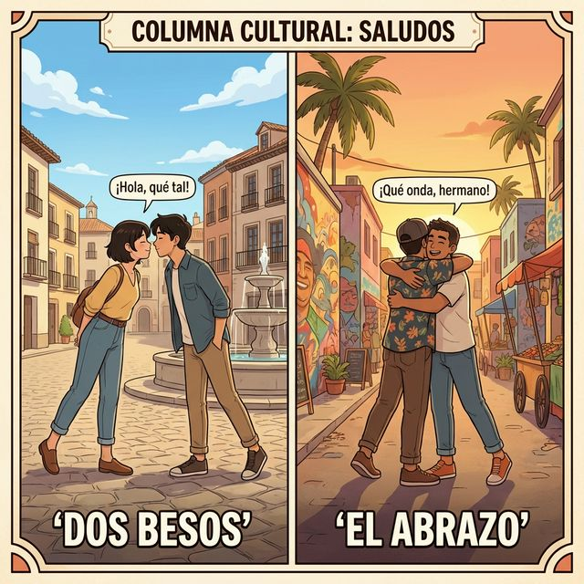

Chapter 2: ¿Cómo soy? (A1)
1. Opener
Who are you? How do you describe your personality and your physical appearance to a new friend? In this chapter, we explore the vibrant language of identity. We will move beyond just naming colors and shapes to describing characters—all while leveraging the English vocabulary you already know.
학습 목표 (Learning Objectives):
- Describe yourself and others using 15+ physical and personality adjectives.
- Distinguish between Ser (permanent traits) and Estar (temporary states) for descriptions.
- Use gender and number agreement with adjectives correctly.
- Understand the cultural nuances of greetings in Spain vs. Latin America.
¿Sabías que...? (Did you know?)
In Spanish, telling someone they are "salado/a" (salty) actually means they are witty, funny, or charming. It’s a compliment! Personality is often described using food metaphors, showing how central culinary culture is to the Spanish identity.
2. Vocabulario Esencial

Spanish adjectives often share roots with English academic or descriptive terms. Use these links to build your vocabulary faster!
| # | Spanish | English Bridge | Korean Tip |
|---|---|---|---|
| 1 | el alto | Altitude (height) ✅ | 고도를 뜻하는 altitude처럼 '키가 큰'을 의미합니다. |
| 2 | el bajo | Base (bottom/low) | '낮은' 혹은 '키가 작은'을 뜻합니다. 베이스 기타를 떠올려보세요. |
| 3 | el gordo | — | '뚱뚱한' 혹은 '살집이 있는'을 뜻합니다. (친한 사이엔 애칭으로도 쓰임) |
| 4 | el delgado | Delicate (slender) | '날씬한' 혹은 '마른'을 뜻합니다. |
| 5 | el rubio | Ruby (shining/reddish-gold) | '금발의'를 의미하며, 빛나는 보석 루비와 어원이 비슷합니다. |
| 6 | el moreno | Moor (dark-skinned) | '검은 머리(피부)의'를 뜻하며, 역사적 맥락의 Moor와 연결됩니다. |
| 7 | el guapo | — | '잘생긴' 혹은 '예쁜'을 뜻합니다. |
| 8 | el feo | — | '못생긴'을 뜻합니다. |
| 9 | el calvo | — | '대머리의'를 뜻합니다. |
| 10 | la barba | Barber (one who cuts beards) ✅ | 이발사를 뜻하는 barber의 어원인 '수염'입니다. |
| 11 | el bigote | — | '콧수염'을 뜻합니다. |
| 12 | las gafas | — | '안경'을 뜻합니다. (중남미에선 lentes/anteojos 도 사용) |
| 13 | simpático/a | Sympathetic (friendly/likable) ✅ | 단순히 동정하는 게 아니라 '성격이 좋은', '친절한' 뜻입니다. |
| 14 | trabajador/a | — | '일꾼'이라는 뜻에서 온 '근면한/열심히 일하는'입니다. |
| 15 | tímido/a | Timid ✅ (Perfect Cognate) | '내성적인' 혹은 '부끄러움을 타는' 뜻입니다. |
| 16 | alegre | Allergretto (lively music tempo) | '명랑한' 혹은 '즐거운' 뜻으로, 음악 용어와 어원이 같습니다. |
| 17 | serio/a | Serious ✅ (Perfect Cognate) | '진지한' 혹은 '엄격한' 뜻입니다. |
✅ 표시가 있는 단어는 영어 단어와 어원이 매우 유사하여 기억하기 쉽습니다.
3. Expresiones Útiles
Describing people isn't just about adjectives. It's about combining them with verbs to paint a picture.
- ¿Cómo eres?: What are you like? (너는 어떤 사람이니?)
- Soy una persona alegre: I am a cheerful person. (나는 명랑한 사람이에요.)
- Eres muy simpático: You are very friendly. (너는 정말 친절해.)
- Él tiene barba y bigote: He has a beard and mustache. (그는 수염과 콧수염이 있어요.)
- Ella lleva gafas: She wears glasses. (그녀는 안경을 썼어요.)
- No soy tímido: I am not shy. (나는 수줍음을 타지 않아요.)
실전 예문 (Practical Examples):
- ES: Mi hermano es muy alto y trabajador. (제 형은 키가 아주 크고 부지런해요.)
- EN: My brother is very tall and hardworking.
- ES: ¿Eres rubio o moreno? (너는 금발이니 아니면 검은 머리니?)
- EN: Are you blonde or dark-haired?
4. Gramática Esencial: SER vs ESTAR (The "To Be" Duo)
English has one "to be". Spanish has two, and Chapter 2 is where we learn their most important difference: Permanence vs. State.
Adjective Agreement (Gender & Number)
In Spanish, adjectives must match the noun they describe.
- Masculine: El chico alto
- Feminine: La chica alta
- Plural: Los chicos altos / Las chicas altas
전 인칭 SER 변화 (Essential Recap)
| 주어 (Subject) | SER (Permanent Traits) |
|---|---|
| yo | soy |
| tú | eres |
| él / ella / usted | es |
| nosotros / nosotras | somos |
| vosotros / vosotras | sois |
| ellos / ellas / ustedes | son |
Korean Tip
키, 성격, 눈 색깔처럼 쉽게 변하지 않는 '본질'은 SER를 씁니다. 반면, 기분(happy, sad)이나 일시적인 상태(sick, tired)는 나중에 배울 ESTAR를 사용합니다. "I am tall"은 평생의 특징이므로
Soy alto가 맞습니다!5. Cultura Viva: Saludos en el Mundo Hispano

Greetings are the mirror of personality in the Spanish-speaking world. In Spain, the standard greeting between a man and a woman, or two women, is the 'Dos Besos'—two light cheek touches starting with the right. Between two men, a firm handshake or a short hug is common.
In Latin America, however, the 'Un Beso' (single kiss) is more common in many regions. People are generally very expressive; "simpático" isn't just a word, it’s a lifestyle! Even when meeting for the first time, people might use familiar terms of endearment, reflecting an "abierto" (open) and "caluroso" (warm) personality trait.
한국어 번역:
인사는 스페인어권 세계에서 성격을 비추는 거울과 같습니다. 스페인에서는 보편적인 인사법으로 남성과 여성 사이, 또는 여성들 사이에서 '도스 베소스(Dos Besos)'를 합니다. 오른쪽 볼부터 시작해 양 볼에 가볍게 맞추는 방식입니다. 남성들 사이에서는 강한 악수나 짧은 포옹이 흔합니다. 반면 라틴 아메리카의 많은 지역에서는 '운 베소(Un Beso, 한 번의 키스)'가 더 일반적입니다. 사람들은 대체로 표현이 매우 풍부합니다. '심파티코(simpático)'는 단순한 단어가 아니라 하나의 라이프스타일입니다! 처음 만났을 때도 친근한 애칭을 사용할 수 있는데, 이는 '아비에르토(abierto, 개방적인)'하고 '카루로소(caluroso, 따뜻한)'한 성격적 특징을 반영합니다.
6. Práctica
A. Match the word
깔끔한 정렬을 위해 아래 표를 참조하여 알맞은 번호와 알파벳을 연결하세요.
| ES 단어 (Spanish) | 선택지 (Selection) |
|---|---|
| 1. Delgado | a. Hardworking |
| 2. Trabajador | b. Thin / Slender |
| 3. Gafas | c. Friendly / Likable |
| 4. Simpático | d. Shy |
| 5. Tímido | e. Glasses |
B. Fill in the blanks
주어에 맞는 ser 동사 변화형을 넣으세요.
- Yo ................ bajo. (I am short.)
- Tú ................ muy simpática. (You are very friendly.)
- Nosotros ................ altos. (We are tall.)
- Ella ................ rubia. (She is blonde.)
- Ellos ................ serios. (They are serious.)
C. 번역 연습 (Translation)
다음 문장을 스페인어로 번역하세요.
- I am hardworking.
- My brother is handsome.
- She has a beard. (Wait, use 'Él' for 'He'!) -> He has a beard.
- We are cheerful.
- Are you shy? (singular/informal)
7. Lectura 📖
Mi mejor amigo, Carlos
Carlos es mi mejor amigo. Él es de Madrid, pero vive en Barcelona. Carlos es un chico alto y moreno. Él es 매우 simpático y 항상 alegre. No es tímido; le gusta hablar con todo el mundo. Él es 아주 trabajador; estudia medicina en la universidad. También lleva gafas y tiene una pequeña barba. ¡Es un buen amigo!
한국어 번역:
카를로스는 나의 가장 친한 친구입니다. 그는 마드리드 출신이지만 바르셀로나에 삽니다. 카를로스는 키가 크고 검은 머리의 소년입니다. 그는 매우 친절하고 항상 명랑합니다. 그는 수줍음을 타지 않으며, 모든 사람과 이야기하는 것을 좋아합니다. 그는 매우 부지런하며 대학에서 의학을 공부합니다. 또한 그는 안경을 쓰고 짧은 수염을 가지고 있습니다. 그는 참 좋은 친구입니다!
Questions:
1. ¿Cómo es Carlos físicamente? (Carlos의 외모는 어떤가요?)
2. ¿Qué estudia Carlos? (Carlos는 무엇을 공부하나요?)
8. Diálogo
¿Cómo es tu nueva profesora?
이 대화는 대학교 캠퍼스에서 두 친구가 새로운 교수에 대해 이야기하는 상황입니다.
| Spanish (ES) | Korean (KO) |
|---|---|
| Juan: ¡Hola, Ana! ¿Qué tal tu nueva clase de español? | Juan: 안녕, Ana! 새로운 스페인어 수업은 어때? |
| Ana: Muy bien. La profesora es fantástica. | Ana: 아주 좋아. 교수님이 정말 멋져. |
| Juan: ¿Ah, sí? ¿Cómo es ella? | Juan: 아, 그래? 그녀는 어떤 분이니? |
| Ana: Es una mujer muy simpática y alegre. | Ana: 아주 친절하고 명랑한 분이야. |
| Juan: ¿Es alta 또는 baja? | Juan: 키가 크셔 아니면 작으셔? |
| Ana: Es un poco baja y lleva gafas. Tiene el pelo rubio. | Ana: 조금 작으시고 안경을 쓰셨어. 금발 머리야. |
| Juan: ¿Es seria en clase? | Juan: 수업 시간에 엄격하시니? |
| Ana: Un poco, 코라고는 하지만 아주 trabajadora. | Ana: 약간은, 하지만 정말 열정적이셔(부지런하셔). |
| Juan: ¡Qué bien! Yo quiero esa clase también. | Juan: 잘됐다! 나도 그 수업 듣고 싶어. |
9. Repaso
- Vocabulario: Adjectives for height (alto/bajo), hair (rubio/moreno), and personality (simpático/serio).
- English Bridge: Recognizing cognates like
músicaandgafas(okay, maybe not glasses, butmanualformano!). - Grammar: Using
SERfor identifying people and describing permanent traits. Adjective matching with gender/number.
Checklist:
- [ ] Can I name 3 physical traits and 3 personality traits?
- [ ] Do I know the full conjugation of SER?
- [ ] Can I use the English Bridge to remember simpático?
10. Cierre
¡Buen trabajo! You now have the power to describe the world and people around you. Language is about connection, and being able to explain "who you are" is the first step to building a bridge with others. Next, we will dive into your identity—name, age, and where you come from. ¡Nos vemos!
11. Soluciones
A. Match the word
1-b, 2-a, 3-e, 4-c, 5-d
B. Fill in the blanks
- soy, 2. eres, 3. somos, 4. es, 5. son
C. 번역 연습
- Soy trabajador.
- Mi hermano es guapo.
- Él tiene barba.
- Somos alegres.
- ¿Eres tímido / tímida?
7. Lectura Questions
- Es alto, moreno, lleva gafas y tiene barba.
- Estudia medicina.